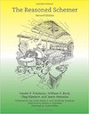

Home
Books
The Little Schemer
The Seasoned Schemer
A Little Java
The Little MLer
How to Design Programs
Semantics Engineering
The Reasoned Schemer
The Little Prover
The Little Typer
The Reasoned Schemer, Second Edition

It is an honor to host this page of Dan's latest Little book here.
MIT Press
Amazon.com
last updated on Fri Jun 1 09:11:08 EDT 2018
generated with
Racket